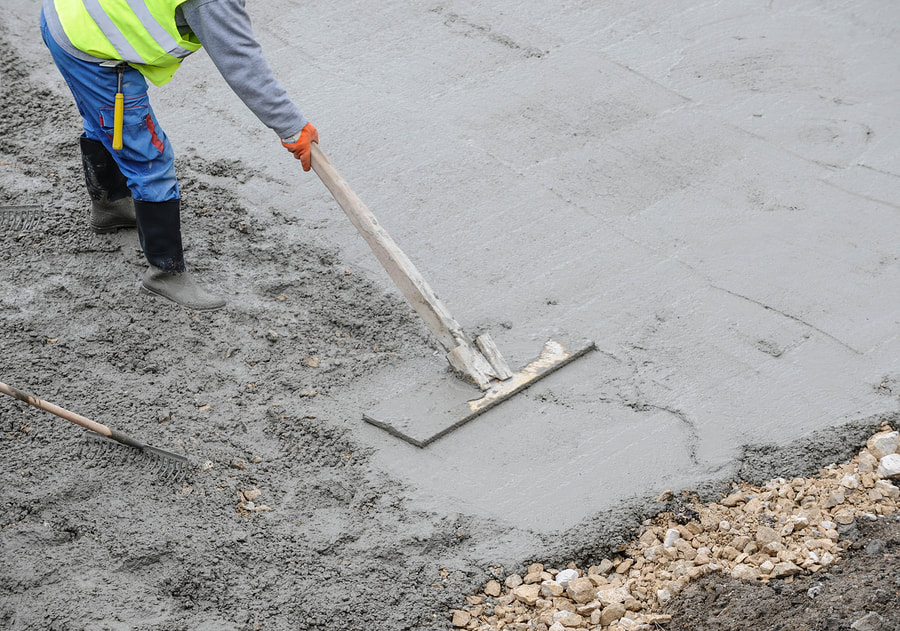

Choose the pattern
We look at the area, the sun, and how the space is used, then pick a pattern and color that fit. A busy stamp on a small walk can look crowded. A quieter texture often wears better on a driveway.
Stamped Concrete
Stamped concrete is a way to put a stone, slate, or brick pattern into a new slab while it is still workable. Homeowners in Youngstown use it for patios, front walks, and sometimes driveways when they want that look without setting individual pavers. The pattern, color, and texture have to be chosen before the truck is scheduled.


Mats are pressed while the surface is still plastic, then a release agent keeps the mats from sticking. Once the slab has hardened, the pattern is in the concrete. A later stain can shift the color, but it will not add a texture that was never stamped.
We look at the area, the sun, and how the space is used, then pick a pattern and color that fit. A busy stamp on a small walk can look crowded. A quieter texture often wears better on a driveway.
The old material comes out if it has failed. The grade is set so water leaves the house, and forms are placed for the thickness the use requires.
Concrete is placed, leveled, and stamped in the window while it can still take a print. Edges, joints, and any steps are finished in the same visit.
The surface needs time before it is washed and opened to use. We tell you when foot traffic is reasonable. Furniture and vehicles wait longer, especially on cold nights.
We do not publish a price per square foot. These are the items that move a quote once we see the lot.
A simple rectangle is a different pour from a patio with a curve, a step, or a seat edge. More edge and more cuts take more time.
Integral color, release, and the stamp mats themselves change the job. A single field pattern costs less to place than a border plus a field.
Breaking out an old patio, hauling it, and moving concrete by buggy through a side yard all show up on the estimate.
Soft spots, a slope toward the house, or a patio that has to meet a door threshold can add base work before anyone stamps a pattern.
Many stamped surfaces are sealed after they cure. That is a separate step from the pour, and it is maintenance, not a one-time shield against salt or snow shovels.
We can stamp a driveway if the slope, the joints, and the texture still make sense for cars and for winter. A deep, irregular stone pattern can be harder to shovel and can hold ice. A lighter texture is often the better driveway choice. We will say so on the walkthrough if the pattern you like belongs on the patio instead.
A textured stamp usually has more grip than a hard-troweled, slick finish. A sealed surface can still be slippery when it is wet or icy, which matters on a walk and near a door. We pick texture with that in mind. No finish is a substitute for clearing snow and ice.
No. The pattern has to be pressed into concrete that is still fresh. If the slab you have is sound and you only want color, look at stained concrete. If it is cracked, scaled, or settled, the honest fix is removal and a new pour.
We narrow it to a few patterns that fit the size of the area and the style of the house, and we look at samples in daylight. A small sample will not match the full patio exactly, because release color and the hand work vary across a larger surface. The goal is a pattern you can live with, not a catalog photo.
A sealer can slow staining and make the color easier to clean. It does not make the slab immune to salt, fertilizer, or a metal shovel. Plan on renewing sealer when it wears, and go easy on deicers the first winter. We will not tell you a sealer is a warranty against Ohio winters.
Foot traffic comes before furniture. Legs and grill wheels point-load a young slab, so the wait is longer than walking across it. Cold weather stretches that window. We will give you a clear time before we leave, based on the pour and the forecast.